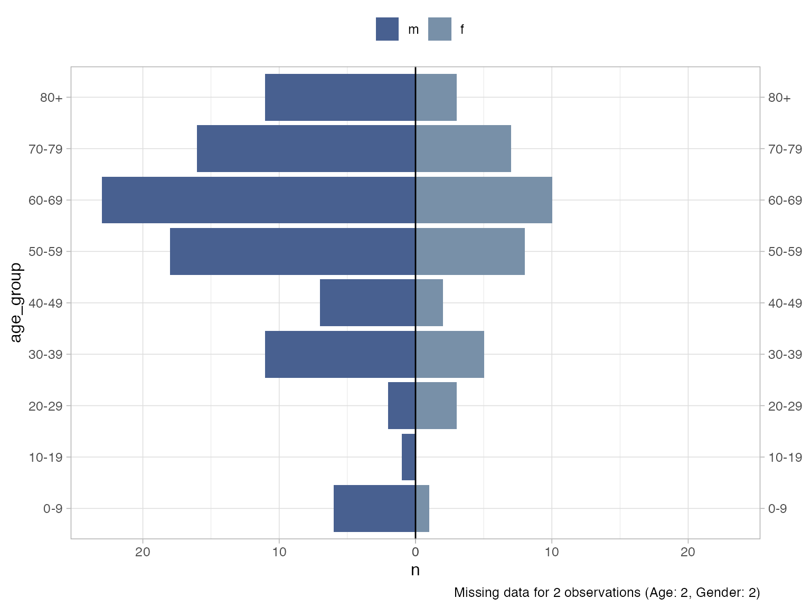
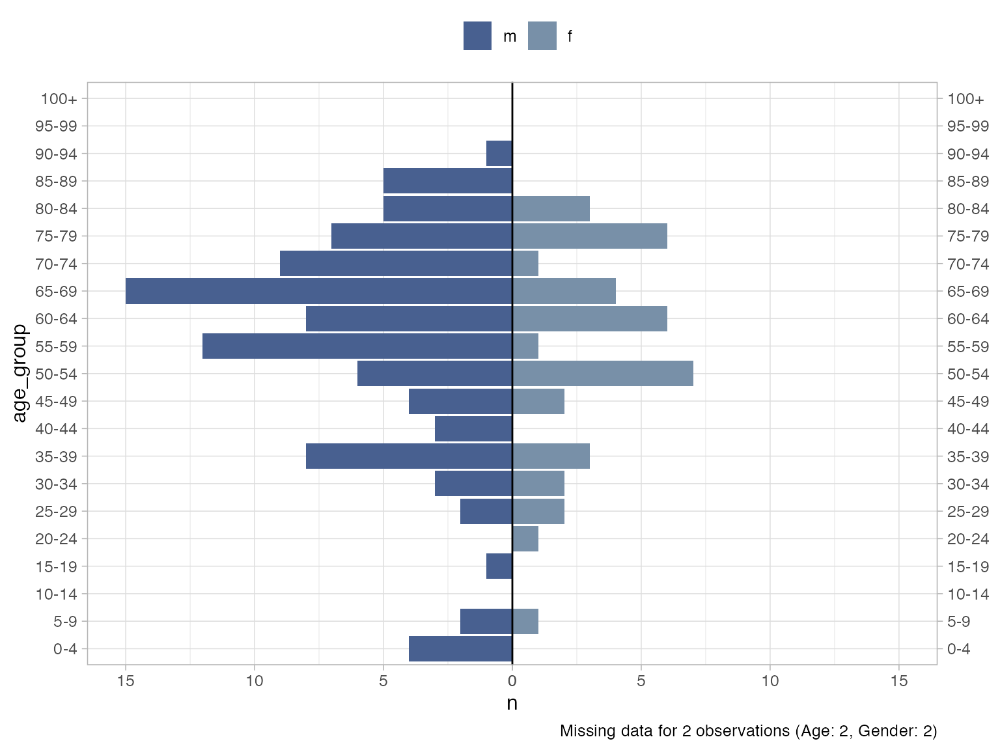
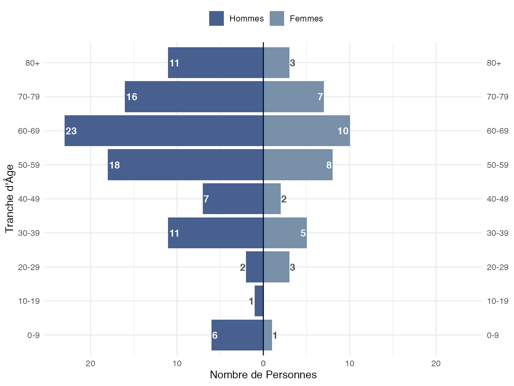
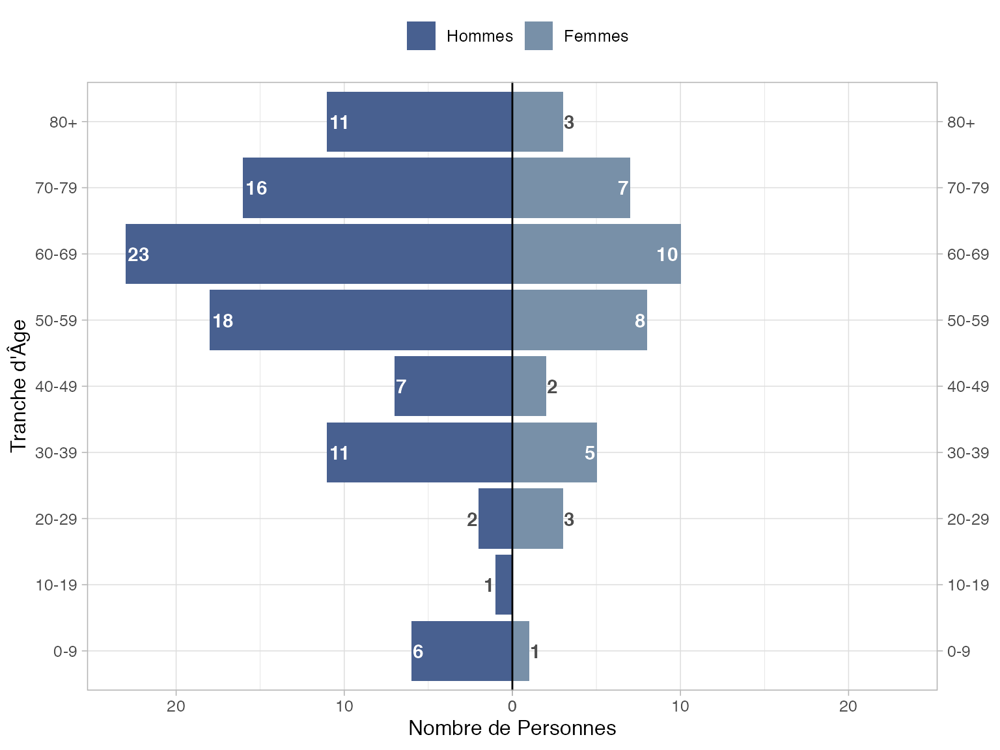
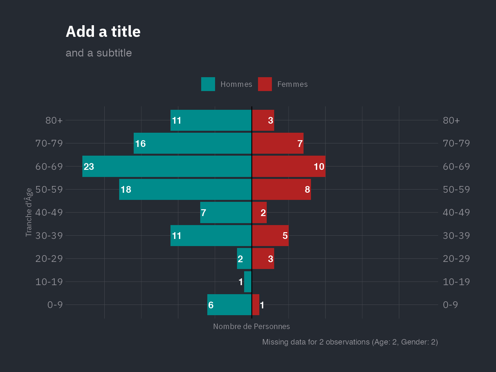

The plot_pyramid function can be used for plotting age pyramids split by gender. It is designed to work with un-aggregated data, i.e. patient level linelist data.
We’ll use the influenza A H7N9 dataset from the {outbreaks} package for our first example.
library(dplyr)
library(ggplot2)
library(outbreaks)
library(epivis)
# set a ggplot2 theme of your preference
theme_set(theme_light(base_size = 12))
df_flu <- as_tibble(outbreaks::fluH7N9_china_2013)
glimpse(df_flu)
#> Rows: 136
#> Columns: 8
#> $ case_id <fct> 1, 2, 3, 4, 5, 6, 7, 8, 9, 10, 11, 12, 13, 14…
#> $ date_of_onset <date> 2013-02-19, 2013-02-27, 2013-03-09, 2013-03-…
#> $ date_of_hospitalisation <date> NA, 2013-03-03, 2013-03-19, 2013-03-27, 2013…
#> $ date_of_outcome <date> 2013-03-04, 2013-03-10, 2013-04-09, NA, 2013…
#> $ outcome <fct> Death, Death, Death, NA, Recover, Death, Deat…
#> $ gender <fct> m, m, f, f, f, f, m, m, m, m, m, f, f, m, f, …
#> $ age <fct> 87, 27, 35, 45, 48, 32, 83, 38, 67, 48, 64, 5…
#> $ province <fct> Shanghai, Shanghai, Anhui, Jiangsu, Jiangsu, …We can see the data has both an age and gender column, with the ‘levels’ of the latter being "m" and "f" for male or female.
To plot the pyramid chart we must supply the age and gender column to the plot_pyramid function along with the 2 levels of the gender column that represent male and female:
plot_pyramid(
df = df_flu,
age_col = age,
gender_col = gender,
gender_levels = c("m", "f")
)
A note on missing data: by default a caption will be added detailing any missing data not represented on the plot. You can remove this with add_missing_cap = FALSE. Missing data is any age that cannot be parsed as a number (including NAs) and/or any gender that does not match a binary level provided (including NAs).
If make_age_groups = TRUE (default) the age variable will be forced into numeric format (if not already) and then binned into age groups. Change the age breaks with the age_breaks argument:
plot_pyramid(
df = df_flu,
age_col = age,
gender_col = gender,
gender_levels = c("m", "f"),
age_breaks = c(seq(0, 100, 5), Inf) # 5 year intervals to 100 then 100+
)
Age group labels are formatted by default with epivis::label_breaks(age_breaks) but you can supply your own labels if required via the age_labels argument (labels must be same length as breaks).
Notice all age groups appear on the plot by default, whether there are any observations of this group or not. To remove groups with no observations use drop_age_levels = TRUE.
If you have data that has already been binned by age and you want to use these bins, you can pass this column and set make_age_groups = FALSE.
You can facet the graphic by supplying a facet_col:
df_flu %>%
mutate(outcome = forcats::fct_explicit_na(outcome, "Unknown")) %>%
plot_pyramid(
age_col = age,
gender_col = gender,
facet_col = outcome, # facet by patient outcome
facet_ncol = 2,
gender_levels = c("m", "f")
)
There are arguments to format axis and legend labels, as well as add data labels to the plot:
plot_pyramid(
df = df_flu,
age_col = age,
gender_col = gender,
gender_levels = c("m", "f"),
gender_labs = c("Hommes", "Femmes"), # must respect the same order as the breaks
x_lab = "Tranche d'Âge",
y_lab = "Nombre de Personnes",
show_data_labs = TRUE,
add_missing_cap = FALSE # remove caption detailing missing data
)
Notice smaller value labels are places outside the bar to improve legibility. You can change the threshold for moving a label with lab_nudge_factor. The default value is 5. Increasing the number increases the distance from the max value required to move a label outside the bar. So if you want to keep all labels inside the bars, increase to a higher value:
plot_pyramid(
df = df_flu,
age_col = age,
gender_col = gender,
gender_levels = c("m", "f"),
gender_labs = c("Hommes", "Femmes"), # must respect the same order as the breaks
x_lab = "Tranche d'Âge",
y_lab = "Nombre de Personnes",
show_data_labs = TRUE,
lab_nudge_factor = 50 # change from 5 to 50
)
Although plot_pyramid has built-in theme defaults, because the function returns a ggplot object, you can easily reset any default by adding your own themes, palettes etc to the object:
plot_pyramid(
df = df_flu,
age_col = age,
gender_col = gender,
gender_levels = c("m", "f"),
gender_labs = c("Hommes", "Femmes"), # must respect the same order as the breaks
colours = c("darkcyan", "firebrick"), # change bar colours
x_lab = "Tranche d'Âge",
y_lab = "Nombre de Personnes",
show_data_labs = TRUE,
lab_nudge_factor = 20,
lab_out_col = "white"
) +
hrbrthemes::theme_ft_rc(base_family = "IBM Plex Sans") +
labs(title = "Add a title", subtitle = "and a subtitle") +
theme(
legend.position = "top",
axis.text.x = element_blank(),
axis.title.x = element_text(hjust = .5),
axis.title.y = element_text(hjust = .5)
)